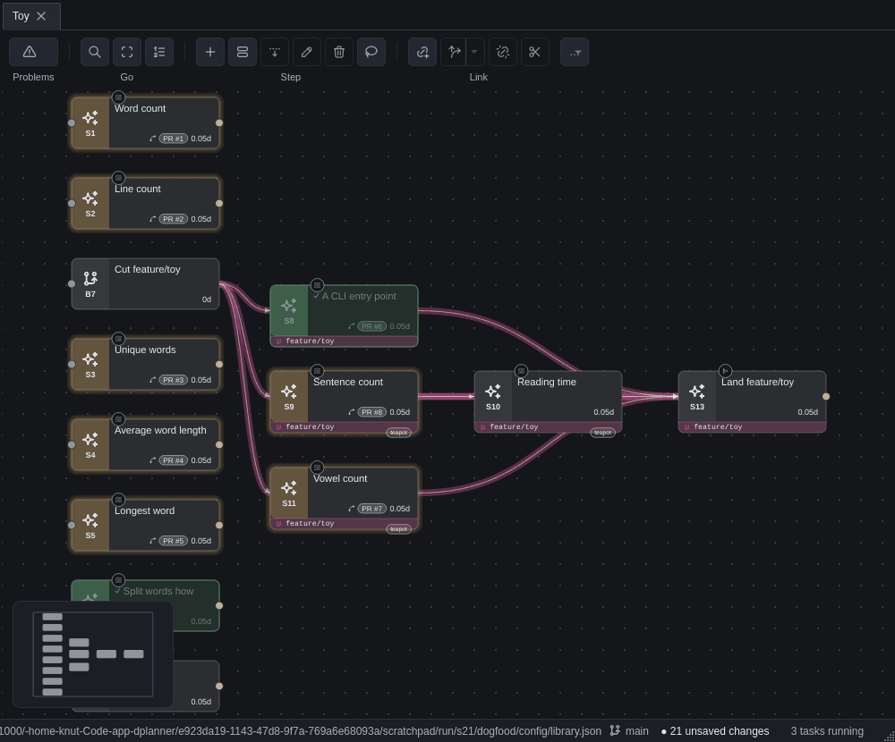
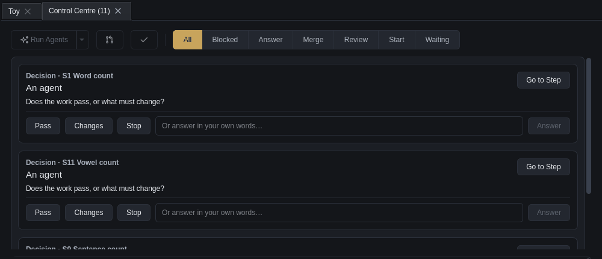
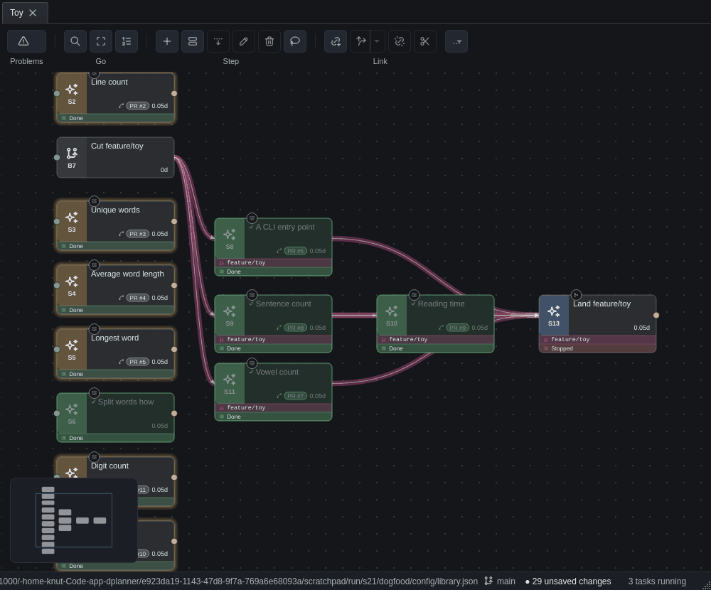
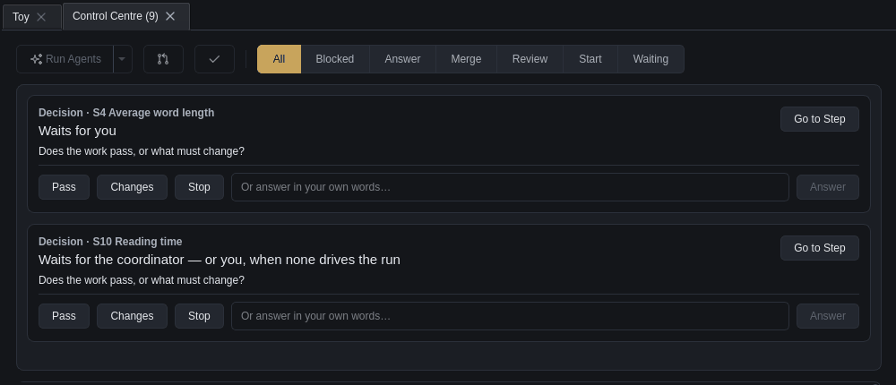
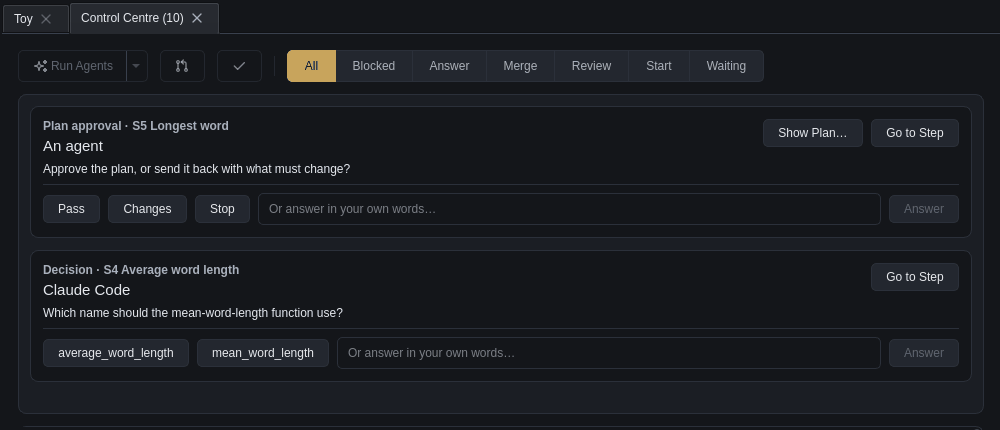
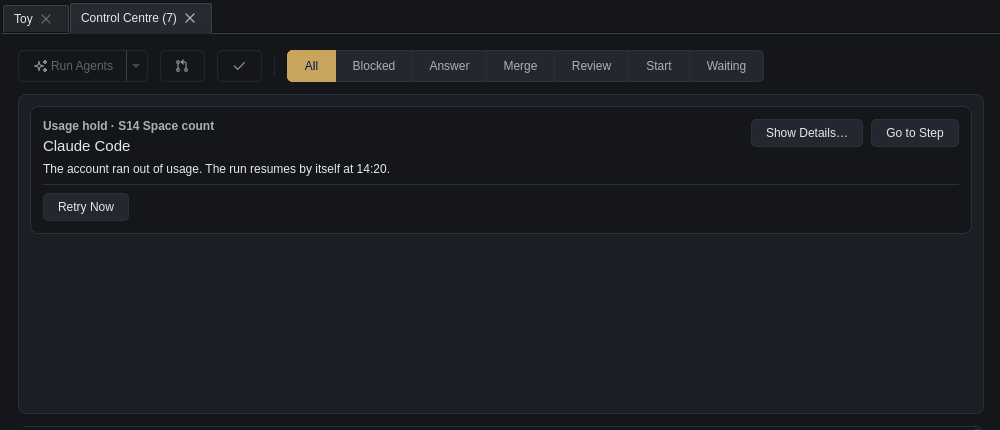
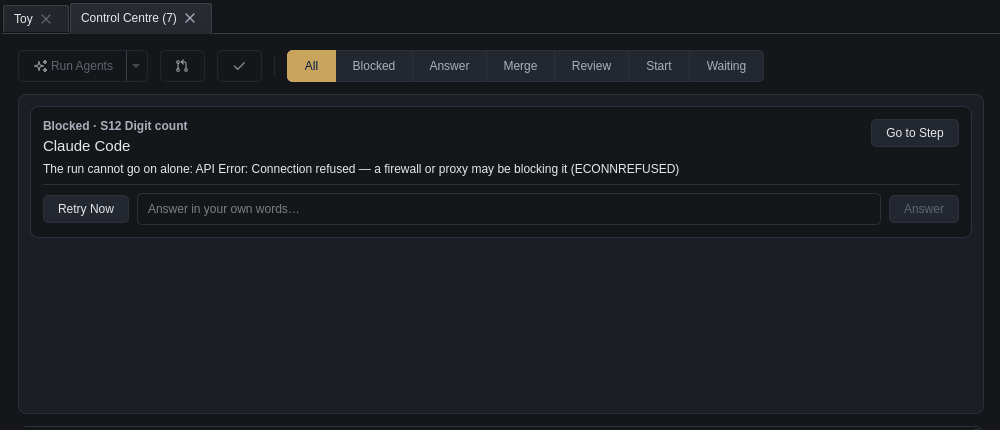
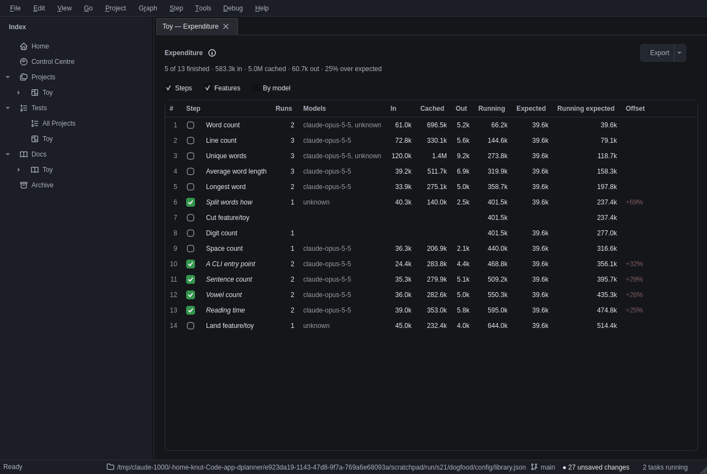

Does the playbook engine hold up with real agents?
Yes. Thirteen agent steps on a toy plan ran every preset, a coordinator, questions and plan approvals answered on the Control Centre's cards, a forced usage hold released by Retry now and a supervisor killed mid-turn. Every pass reached its end. What a person sees while it runs is the weak part.
The answer
The engine did the right thing at every turn: it parked when it should have, resumed the same session with the answer, merged only into the feature branch, and revived a killed run. Three small fixes landed with this step. Eight rough edges are filed, and one of them needs Knut's call.
All nine presets, cross-vendor review both ways, progress merging its own PR, the coordinator end to end, the hold and Retry now, revive after SIGKILL.
Codex runs counted as model "unknown"; gate cards that said "An agent"; a fake API that could not release a hold.
On a landing that was never run, Review only (the landing default) reviews the branch and skips the landing's own work (N180).
How it feels
During the run, almost everything a person needed to know was on the Control Centre's cards, and only there. The canvas showed four states and could not tell a step that waits for you from one that waits for nobody. S27's strip, merged mid-run, now fills that gap, except that it reads Done on steps whose PR is still open. The status bar speaks in run ids. A run that is dying, or already dead, shows nothing at all.
Each row is one moment of a pass, as the window showed it. The last column marks where I was left guessing.
| Moment | Canvas card | Control Centre | Status bar | Left guessing? |
|---|---|---|---|---|
Launched (agent run --playbook) | Turns in progress; a small playbook medallion over the card | The row moves to In progress | "Took N changes from outside DPlanner" | which stagePlan, execute and review all look the same |
| Plan waits for approval | Still in progress | A card: Plan approval · S5 Longest word, Show Plan…, Pass / Changes / Stop, your own words | Nothing | canvas silentOnly the card says it waits for you |
| The agent asks its own question | In progress | A card that names the agent (Claude Code) with the choices it gave | Nothing | clear |
| Work done, gate waiting | Gold Ready for review with the PR chip: the agent set its status, the gate came after | A gate card. It read An agent; it now reads Waits for you or Waits for the coordinator | Nothing | identicalA step at a person gate looks exactly like one that is merely Ready for review (N186) |
| You answer | Unchanged until the next stage | The card goes on the next poll (2 s) | "Q-e7aa answered; run 20261008T085057Z-95593154 resumes with it" | run idThe step is not named (N187) |
| A coordinator's squad works it | A teapot chip under the card | A Squad column reading teapot | Nothing | clear |
| Account held | In progress | Usage hold · Claude Code · The run resumes by itself at 14:20, Retry Now | Nothing | clear |
| Failing and retrying | In progress | Nothing, for 25 minutes, then a Blocked card | Nothing | silentN183 |
| Supervisor dead | In progress | Nothing until a window start revives it | Nothing | silentN182 |
| Pass stopped by you | In progress forever | The In progress row stays | "…its pass advances on it" | staleN181 |
progress merged | Green tick, PR chip | Done | Nothing | clear |


Since S27: a strip under the card
S27 merged into feature/playbooks while this run went on. Rendered over the same toy plan, its strip says what the canvas could not. A live spike gate read Waits for you · plan approval (also in playbook show), the stopped landing reads Stopped, and the finished passes read Done. The catch: S2, S3 and S5 are gold, Ready for review, with their PRs into main unmerged, and their strip says Done. The pass is done; the step is not (N186).


Every preset
Each preset ran on one tiny step: one module and one test. Most passes took one to six minutes of agent time. The ones that waited for a person took as long as the person did.
| Step · preset | Stages as run | Out tokens | Ending |
|---|---|---|---|
S1 · execute | execute (Codex); later review-only: review (Claude), person | 5.2k | doneReady for review, PR #1; review pass, person pass |
S2 · plan-execute-review-self | plan, execute, review — all Claude, the review fresh | 5.6k | donepass in 1 min 26 s |
S3 · plan-execute-review-other | plan, execute (Codex), review (Claude) | 9.2k | donepass |
S4 · plan-execute-person | plan, execute (asked, answered), person: changes, execute 2 (resumed), person: Pass | 6.9k | doneloop-back resumed the session |
S5 · plan-person-execute | plan, person (approved on the card), execute | 5.0k | done |
S6 · spike | plan (Codex, read-only), person | 2.5k | donestep set done on approval |
S8 · plan-execute-progress | plan (lost, retried), execute, progress | 4.4k | donemerged PR #6 into feature/toy |
S9–S11 · plan-execute-coordinator | plan, execute, coordinator gate (Teapot Actual) | 5.0–5.8k each | donemerged by the coordinator |
S13 · review-only (landing default) | review (Codex), person: Stop | 4.0k | wrong workreviewed the branch; no landing PR existed (N180) |
A Codex review stage cannot reach the network: the landing's reviewer said its "remote refresh" was "restricted by the sandbox". A Codex agent that read its briefing first (S1) finished in one turn.
Answering from the cards
Every answer went through the real card buttons in the real window, run offscreen: a choice, a plan's Pass, your own words as changes, Stop, and Retry Now. Each was delivered, and the run resumed in the same session.

- An agent's question. S4's briefing asked it to ask which name to use. It ran
dplanner question askwith both choices and ended its turnasked. Pressing mean_word_length resumed the session with that answer, and the code uses it. - A plan approval. Show Plan… opens the plan. Pass started execute. The status bar's confirmation was replaced at once by "Took 4 changes from outside DPlanner".
- Your own words. Typed into S4's person gate, they became changes. Execute attempt 2 resumed the same session, stripped the punctuation as asked, added a test and came back to the gate for round 2.
- Stop ended the landing's pass. The step still reads in progress (N181).
A coordinator
The S19 briefing, run as claude -p, coordinated three steps through to merge, and the word it chose was teapot. Headless, it needed a person three times: to wake it (it schedules a wake-up that -p cannot keep), to allow gh pr merge (Claude's auto mode refused it), and to wave through a "stale" skill.
- The word: teapot. Friendly, two syllables, professional. Callsigns came out as Teapot Actual, Teapot Two, and so on.
- Discipline. It put
export DPLANNER_CALLSIGN=teapot-actualbefore everydplannercall. Each Bash call is a fresh shell, so that is what the briefing asks. - Judgement.
- It compared S9's and S11's files and ran them side by side.
- For the gates it read both diffs and built
teapot-actual/verifyoverfeature/toywith both merged; 13 tests passed. Only then did it pass both gates and record a decision note. - It skipped a cross-vendor review on toy-sized changes and said why.
- It never answered a person gate.
- Where it stopped (N185):
skill statusread stale, because a branch build was checking the installed skill. It stopped, as the briefing says to; workers in the same state carried on.- Each round ended with ScheduleWakeup, which ends a
-pprocess. I resumed it five times, at a total of $0.74. gh pr mergewas refused by Claude's auto mode as "a merge without review". It stopped, asked, and merged once it was given--allowedTools "Bash(gh pr merge:*)".
The window's Autonomous Work ▸ Local opens the same briefing interactively in the profile's command, Claude's --permission-mode plan. A person is there to approve its plan and its gh calls, so none of these three stops arises. A coordinator with nobody watching needs a waker and an allow-list.
Usage hold
A hold forced through the fake API put up its card within 3 s and held the whole account. When the fake was told to let requests through, Retry Now resumed the same run, which finished 46 s later, and the hold lifted. The first attempt taught that a waiting supervisor keeps the environment it started with.

- First attempt (S12).
- The fake ran in
usagemode, and the turn endedlimit. The card borrowed the account's last-known reset (15:20), as designed. - S10's plan, finishing on the real account, lifted the hold at once; that is correct.
- After the fake was stopped, Retry Now resumed inside the waiting supervisor, which still pointed at the dead fake. Each turn hit ECONNREFUSED after about 3 minutes of Claude's own retrying.
- Then came DPlanner's retries at 30 s, 2 min and 10 min. The
blockedcard appeared at last, 25 minutes after the hold. - Retry Now on that card started a fresh supervisor in the window's environment, and the run finished (N183, N184).
- The fake ran in
- Second attempt (S14), with
fake_api.py usage --release FLAG:- The card appeared, and
agent limitsread five-hour 100 %, held. - I touched the flag and pressed Retry Now. Turn 2 went through the fake to the real API with Claude's own login, and finished done.
- The limits went back to the real 43 %.
- The card appeared, and

A killed supervisor
A supervisor killed with SIGKILL mid-turn left a turn with no end. Its Claude process exited on its own within about 40 s, once the pipe was gone. A window start then ran revive, which ended the turn failed/lost and retried. The pass went on through execute and progress to done. Until the window started, nothing said the run was dead (N182).
What it cost
Claude's worker turns came to about $6.50 at list price, and the coordinator to $0.74, all on the subscription; Codex used about 7 % of its five-hour window. Expenditure shows every run per step. Codex runs read model unknown until this step's fix.

codex exec --json never names its model. The fix reads it from the rollout (N177).Fixed and filed
Three fixes are on this branch, each with a test where it is code. Eight later notes are on S21, worded as the facts they are.
Fixed
- N177.
Headless.model, a hook besidelimits; Codex reads the latestturn_contextfrom the thread's rollout. - N178. A gate card says whose judgement it waits for (
questions.gate_role). - N179.
fake_api.py --release FLAG: once the file exists, a pass-through to the real API.
Filed
- N180 for KnutReview only on a landing that was never run reviews the branch. Refuse a gate-first playbook on a step not at Ready for review, or make the landing default execute → review → person.
- N181. Stop leaves the step in progress.
- N182. A dead supervisor is invisible until something revives it.
- N183. Transient failures show nothing for about 25 minutes.
- N184. Retry now resumes inside the waiting supervisor, in its old environment.
- N185. A headless coordinator needs a waker and an allow-list for
gh pr merge. - N186. S27's strip says Done on a step whose PR nobody merged.
- N187. Small things:
- run ids in the status bar;
topology setdoes not count as reading the topology;- a branch cut is listed as pending;
- Codex review has no network;
- there is no per-profile model, so Opus 5.5 was pinned with
ANTHROPIC_MODEL.
Not tested
What this run did not reach, so nobody reads it as proven.
- opencode, in any stage.
- A real exhausted account, and a Codex usage hold. Codex's real one was seen on 2026-10-04.
- The window's own Autonomous Work ▸ Local menu. The coordinator ran as
claude -pon the same briefing. - A round cap, two coordinators at once, a second machine.
- The sleep inhibitor (N111). It stays filed.